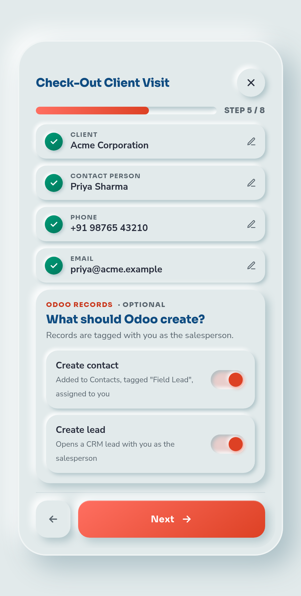

Field Sales Activity & Tracking · Odoo __VERSION__
Every visit verified. Every lead assigned.
A kiosk your field reps open on their phone: GPS + selfie check-in, a one-field-at-a-time client visit form with a site photo, and contacts & CRM leads created on the spot — tagged to the rep who found them.
Odoo __VERSION__.0
Community & Enterprise
Mobile first
No external services

